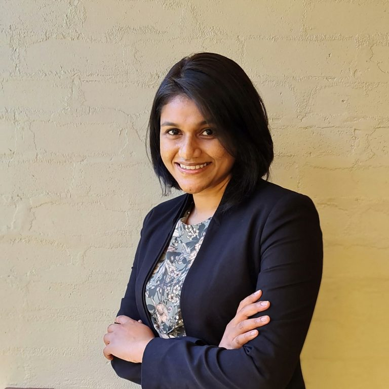

Kidney care
Nephrology & hypertension
- General nephrology
- Chronic kidney disease care
- Acute kidney injury
- Dialysis care (home and hospital-based)
- Hypertension
- Renal stones
MBBS (Hons) | FRACP | PhD
Nephrologist and Obstetric Medicine Physician
Providing patient-centred, evidence-based care across kidney health, hypertension and renal conditions related to pregnancy.

About
Dr Renuka Shanmugalingam is an Australian-trained nephrologist and obstetric medicine physician. She completed a PhD in hypertensive disorders of pregnancy and has received three national and international awards for studies conducted as part of her PhD.
She is passionate about teaching and is a frequent invited speaker at national and international conferences. She is also the clinical sub-dean for Western Sydney University’s Bankstown Clinical School.
Dr Shanmugalingam is an executive council member of the Society of Obstetric Medicine Australia and New Zealand (SOMANZ) and heads the education committee of SOMANZ. She has also led the development of SOMANZ's updated guideline on hypertensive disorders of pregnancy.
Clinical services
Dr Shanmugalingam's clinical interests include general nephrology, chronic kidney disease, hypertension and the care of women with kidney-related conditions during and after pregnancy.
Kidney care
Pregnancy-related care
Consultations
For appointment, referral and clinic enquiries, please contact the relevant practice directly.
North Parramatta
Bankstown
Liverpool
Please note: Appointments are arranged through the clinics by telephone. This website does not accept bookings or collect patient information.
Training & credentials
Professional qualifications and training